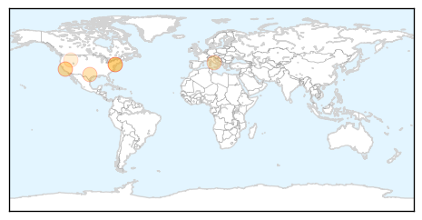
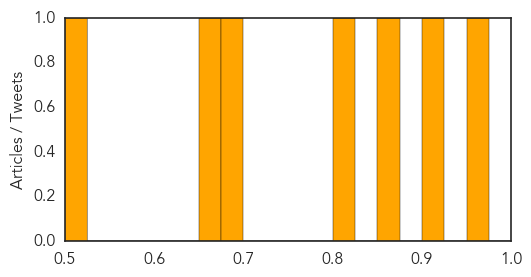
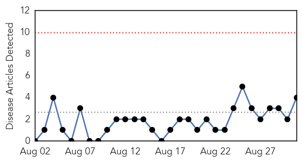
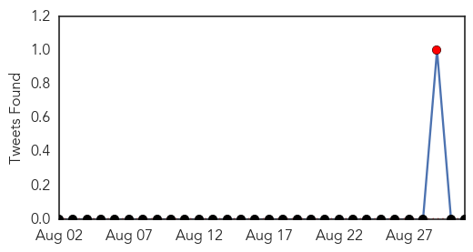
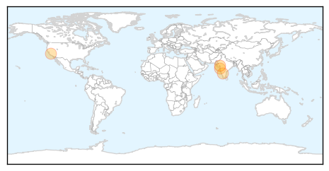

Measles
30-Day Web Trend
0 alerts, 0 warnings

30-Day Twitter Trend
0 alerts, 0 warnings

Article Locations
Article Confidences
Top Articles:
- 0.969
- NOT VACCINATINGIS THE GREATER RISK
- 0.908
- Back-to-school preparations often exclude vaccines in PA
- 0.868
- Back-to-school preparations often exclude vaccines in PA
- 0.809
- Parental doubt drives drop in vaccination
- 0.688
- Requirements greater for Macomb parents seeking vaccination waivers
- 0.672
- Pockets of unvaccinated kids pose risk: study
- 0.506
- State exemption levels low, national vaccination rates high
Top Tweets:
-
No tweets found for Aug 31, 2015
Swine Flu
30-Day Web Trend
0 alerts, 0 warnings

30-Day Twitter Trend
0 alerts, 0 warnings

Article Locations
Article Confidences

Top Articles:
Top Tweets:
-
No tweets found for Aug 31, 2015